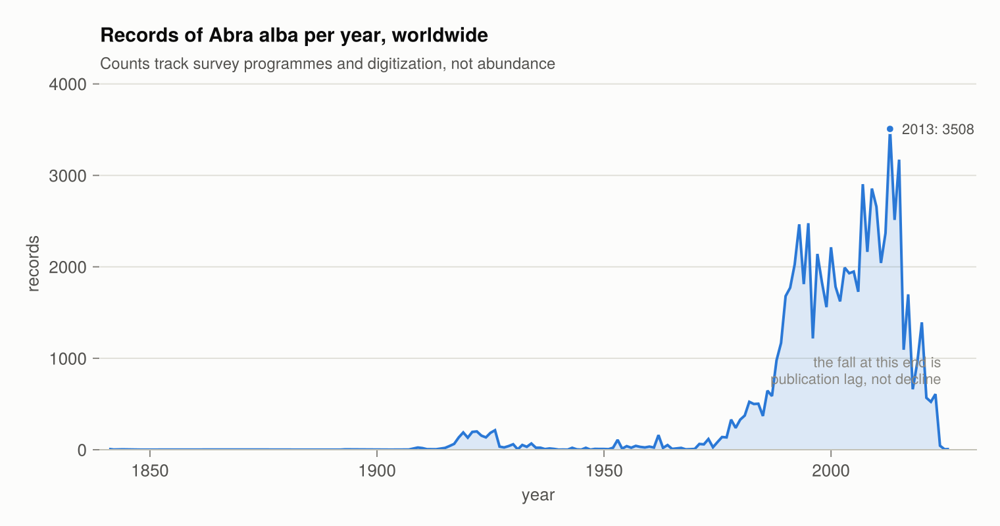

OBISClient.jl
A Julia client for OBIS, the Ocean Biodiversity Information System, a programme of the Intergovernmental Oceanographic Commission of UNESCO. Results come back as typed tables with a fixed schema, carrying the licence and citation of the dataset each row came from.
OBISClient.jl is an independent, community-maintained client. It is not affiliated with, endorsed by, or maintained by OBIS, the Intergovernmental Oceanographic Commission, or UNESCO. The name identifies the service the package connects to; the data, the API and the quality control pipeline are the work of OBIS and its nodes.
This package was written with Claude Code, and every commit in its history is co-authored. The API behaviour it relies on was checked against the live service and the suite runs on every push; the maintainer is responsible for the code. Please open an issue for anything that looks wrong.
Installation
using Pkg
Pkg.add("OBISClient")Quick start
using OBISClient
recs = OBISClient.occurrence("Abra alba"; limit = 500)
recs.scientificName # a column
recs.decimalLatitude # Float64, always
recs.flags # a Set{String} per record
OBISClient.licenses(recs) # may these data be redistributed?
OBISClient.citations(recs) # how to credit them, access date includedResults implement the Tables.jl interface, so DataFrame(recs), CSV.write("out.csv", recs), Arrow and Parquet all work without the package depending on any of them.
Functions
| Function | What it returns | Page |
|---|---|---|
occurrence | Occurrence records, as a typed table | Getting started |
occurrence_pages | Lazy, resumable pages of the same | Large queries |
occurrence_by_id | One record, by OBIS record UUID | Getting started |
checklist | Which taxa occur in a selection | Getting started |
taxon | A WoRMS taxon, by AphiaID or exact name | Getting started |
dataset | Dataset metadata, including the rights statement | Licensing and citation |
node, institute, area, country | The identifiers the filters accept | Getting started |
statistics | Counts for a query, without retrieving records | Interpreting OBIS data |
statistics_years | Records per year | Interpreting OBIS data |
statistics_qc | Missing and invalid fields, on-land, non-marine | Interpreting OBIS data |
facet | Counts grouped by a field | Interpreting OBIS data |
licenses | What a result may be used for | Licensing and citation |
citations | The credit a result requires, as a table, text or BibTeX | Licensing and citation |
estimate_size | How many records a query would return | Large queries |
download_exports | The bulk GeoParquet route | Large queries |
QueryCache | Reproducible re-runs against cached responses | Reproducibility |
configure! | Page size, pacing, retries, caching | Getting started |
A full session — retrieve, map, group, pivot and test a relationship — is in Worked example: killer whales.
Full docstrings are in the Public API reference. Functions the package uses internally, and that the schema is built from, are in Internals.
What the package guarantees
A stable, typed schema. OBIS returns only the fields a record has a value for, so the field set differs from query to query. A result here always has the same columns in the same order, with concrete types and missing for absent values. Darwin Core fields outside the core schema are preserved per row in an extra column.
Rights that travel with the data. Every occurrence row carries the licence and citation of its dataset, and the result records the date it was retrieved — which the OBIS citation format requires and nothing in the data supplies.
Access to what the default view omits. Absence records and records dropped by the quality pipeline are excluded unless asked for, and the tri-state absence, dropped and event keywords ask for them.
A choice between access routes. A query too large for the API raises an error listing the alternatives instead of switching routes on its own. The API and the bulk export don't cover the same records, so the choice is yours to make.
Read this before analysing anything
Record counts measure sampling effort as much as biology, and the default view of OBIS is filtered in two directions. Interpreting OBIS data covers the four ways a correct query becomes a wrong conclusion.

How this manual was checked
The numbers, field names and error messages here were checked against the live OBIS API, not copied from its documentation. Where a statement rests on observation rather than on something OBIS publishes, the text says so.
Output in the examples was pasted back from actual runs. Docstring examples marked jldoctest run on every documentation build. An integration suite and a link check run weekly against the live API and over every URL in the manual and the docstrings.
The figures come from examples/figures.jl and examples/orcas.jl, which query the API when they run. Counts in the figures move as OBIS ingests data.
Sources
This manual describes the package. For the service and the data behind it:
| Source | What it covers |
|---|---|
| api.obis.org | The API specification (obis_v3.yml) |
| manual.obis.org/access.html | How OBIS data can be accessed, and what each route includes |
| manual.obis.org/policy.html | The data policy: licences, conditions of use, the disclaimer |
| manual.obis.org/citing.html | Citation formats |
| manual.obis.org/dataquality.html | Quality flags and the QC pipeline |
| github.com/iobis/obis-qc | Each quality check and the flag it raises |
| github.com/iobis/obis-open-data | The bulk GeoParquet export on AWS |
| dwc.tdwg.org/terms | The Darwin Core standard |
The repository also carries NOTES.md, the research notes the package was built from: the endpoint and parameter inventory, the response shapes, the pagination and error semantics, and which statements are documented versus observed.
Scope
The package is a client. It does not model, plot, or ship data. Analysis belongs in packages built for it, and OBIS records have a DOI and an access date that a frozen copy inside a package would misreport.
How to cite
Cite the datasets you used — OBISClient.citations(result) builds those, with the access date filled in. See Licensing and citation. Citing the package does not replace citing the data.
For the package itself, the repository ships a CITATION.cff, which GitHub's "Cite this repository" button reads, and a CITATION.bib:
@software{bertuzzi_obis_jl_2026,
author = {Bertuzzi, Dante},
title = {{OBISClient.jl}: a {Julia} client for the {Ocean} {Biodiversity}
{Information} {System}},
year = {2026},
version = {0.1.0},
url = {https://github.com/dantebertuzzi/OBISClient.jl},
note = {Julia package}
}Cite the version you actually ran. What you get back depends on the release and on the state of OBIS the day you queried it; the access date on your data citations covers the second half of that.